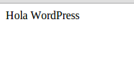

<!DOCTYPE html>
<html>
<head>
<title>Título de la página</title>
</head>
<body>
<?php echo 'Hola mundo'; ?>
</body>
</html>
www.buscadordepersonas.com?persona=ignacio
<?php echo 'Hola, ' . $_GET['persona']; ?>
Hola, ignacio
Una de las claves a la hora de programar trata el considerar todos los posibles caminos que tu código puede tomar.
¿Qué pasa cuando ?persona=ignacio no existe en la URL?
Respuesta: Aparece un error por pantalla
La solución pasa por darle a la persona un valor por defecto en caso de que no exista utilizando por ejemplo, condicionales:
<?php
if ( isset( $_GET['persona'] ) ) {
$persona = $_GET['persona'];
}
else {
$persona = 'Ignacio';
}
echo 'Hola, ' . $persona;
Además vemos por primera vez una variable: Para declarar una variable en PHP hay que preceder cualquier nombre con $
Los condicionales nos permiten ejecutar sentencias en un lenguaje parecido al humano
Por ejemplo
Si me falta pan, ir a la tienda. Si no, quedarme en casa.
<?php
$tengo_pan = true;
if ( ! $tengo_pan ) {
echo 'Ir a la tienda';
}
else {
echo 'Quedarme en casa';
}
Aunque PHP viene de serie con muchísimas funciones nativas (hemos visto isset), muchas veces necesitaremos crear nuestras propias funciones.
Una función es Una pieza de código reusable que se identifica por un nombre y a la que se pueden pasar valores para que nos devuelva otros.
Imaginemos que tenemos una discoteca. Necesitamos una manera de comprobar si una persona es mayor de edad. Para ello necesitamos la edad del individuo
<?php
function es_adulto( $anyo_de_nacimiento ) {
$anyo_actual = date( 'Y' );
if ( $anyo_actual - $anyo_de_nacimiento >= 18 )
return true;
else
return false;
}
if ( es_adulto( 1985 ) ) {
echo "Pase";
}
else {
echo "Vuelve a tu casa, niño";
}
date es otra función nativa que devuelve fechas en distintos formatos. Con 'Y' sólo devuelve el año actual.
Un Array es un conjunto de datos y se puede definir así:
<?php $personas = ['Ignacio', 'Lucía', 'Manuel'];
Donde $personas[0] es "Ignacio" y $personas[2] es "Manuel".
Por ejemplo
echo 'Hola, ' . $personas[1]devuelve "Hola, Lucía"
Los arrays se pueden recorrer haciendo uso de un loop
<?php
$personas = ['Ignacio', 'Lucía', 'Manuel'];
echo '<ul>'
foreach ( $personas as $persona ) {
echo '<li>' . $persona . '</li>';
}
echo '</ul>'
Los arrays también pueden ser multidimensionales. El índice no tiene porqué ser un número. Haciendo uso de la función es_adulto:
<?php
$personas = [
'Ignacio' => 1981,
'Lucía' => 1982,
'Manuel' => 2001
];
echo '<ul>'
foreach ( $personas as $nombre => $anyo ) {
if ( es_adulto( $anyo ) )
echo "<li>Pase, " . $nombre . "</li>";
else
echo "<li>Vuelve a tu casa, " . $nombre . "</li>";
}
echo '</ul>'
GET /index.php?search=hola&page=3 HTTP/1.1
User-Agent: [DATOS DEL NAVEGADOR]
Accept: image/gif, image/jpeg, text/*, */*
[LÍNEA EN BLANCO]
[CUERPO. En las peticiones GET no suele ir nada]
POST /index.php HTTP/1.1
User-Agent: [DATOS DEL NAVEGADOR]
Accept: image/gif, image/jpeg, text/*, */*
[LÍNEA EN BLANCO]
?search=hola&page=3
HTTP/1.1 200 OK
Server:[DATOS DEL SERVIDOR]
Content-Type: text/html
Content-Lenght: 160
[LÍNEA EN BLANCO]
<!DOCTYPE html>
<html>
...
</html>
(?search=a&page=3). Este tipo de peticiones son cacheablesPermiten ver información sobre el sistema o los parámetros de la petición. Son las siguientes:
En HTML, un formulario básico podría ser el siguiente:
<form action="" method="POST">
<input type="text" name="texto" value="" />
<input type="submit" name="submit" value="Enviar" />
</form>
Pero este formulario no sirve de mucho ya que no lo estamos procesando ni estamos guardando nada en base de datos.
Vamos a complicarlo un poco más y vamos a mostrar por pantalla lo que el usuario quiera enviar
<?php
if ( isset( $_POST['texto'] ) ) {
echo $texto;
}
else {
?>
<form action="" method="POST">
<input type="text" name="texto" value="" />
<input type="submit" name="submit" value="Enviar" />
</form>
<?php
}
Explicación: Si existe el campo "Texto" (se ha enviado), mostrar el texto, en otro caso, mostrar el formulario.
Pulsamos enviar...
Escribe un formulario que recoja datos personales:
El formulario se procesará de la siguiente manera:
Puedes hacer uso de las funciones strlen para contar el número de caracteres en una cadena
Solución / Archivo PHPLa programación orientada a objetos es un paradigma que puede complicarse muchísimo
A lo largo del curso utilizaremos clases y objetos de una forma básica.
Una clase es un contenedor de propiedades y métodos (funciones) relacionados entre si
Ejemplo de una clase persona:
<?php
class Persona {
public $nombre;
public $edad;
public function __construct($nombre, $edad) {
$this->nombre = $nombre;
$this->edad = $edad;
}
}
La función __construct() (método cuando hablamos de clases) se le llama método mágico y será ejecutado siempre que instanciamos dicha clase.
$yo = new Persona( 'Ignacio', 33 ); Esto crea una instancia de la clase Persona que se guarda en la variable $yo
Nada nos impide ahora crear múltiples instancias de esta clase, de hecho, lo haremos muy a menudo. La clase es simplemente la plantilla para crear distintas personas.
$yo = new Persona( 'Ignacio', 33 );
$ella = new Persona( 'Lucía', 32 ); Pero la clase hasta ahora no es demasiado útil. Probemos a añadir alguna función de utilidad.
<?php
class Persona {
public $nombre;
public $edad;
public $hermano;
public function __construct($nombre, $edad) {
$this->nombre = $nombre;
$this->edad = $edad;
}
public function set_hermano( $hermano ) {
$this->hermano = $hermano;
}
}
Ahora podemos relacionar a dos personas por un parentesco
<?php
$yo = new Persona( 'Ignacio', 34 );
$mi_hermano = new Persona( 'Alejandro', 31 );
$yo->set_hermano( $mi_hermano );
echo "El hermano de " . $yo->nombre . " es " . $yo->hermano->nombre;
El resultado a la sentencia anterior es:
El hermano de Ignacio es Alejandro
Definir una clase Post con los siguientes atributos: